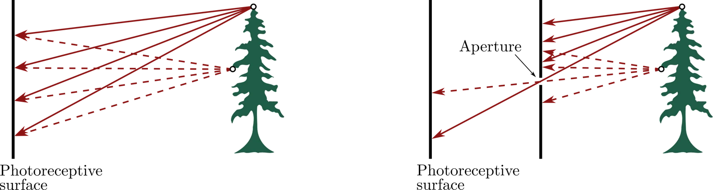
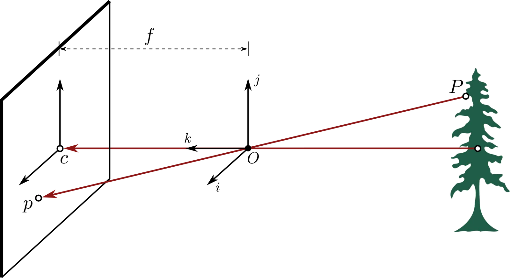
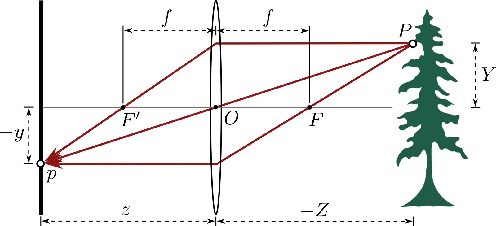
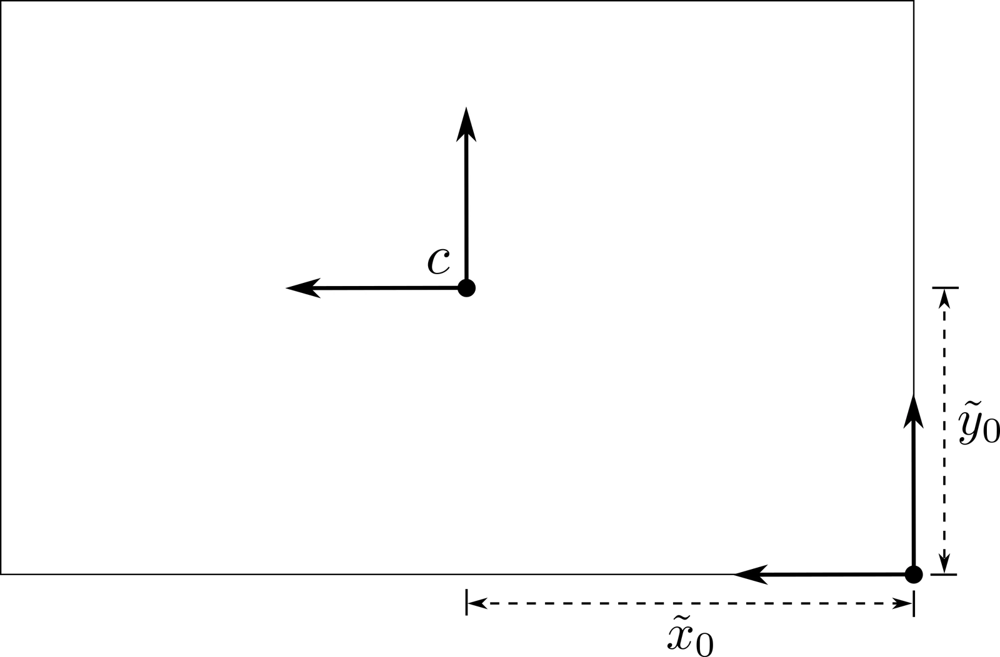
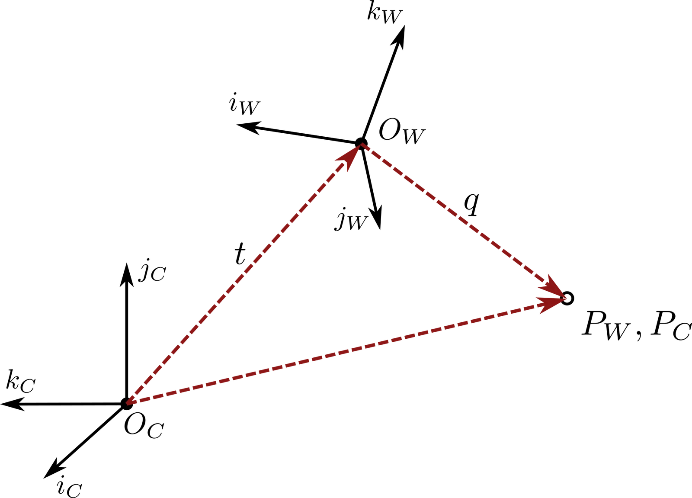

相机模型与标定
上一章概览了机器人中使用的各类传感器，而视觉传感器因其在捕获环境丰富高维信息方面的独特能力，值得特别关注。单幅相机图像就能包含关于物体身份、位姿、颜色、纹理与空间关系的信息——这些信息若用其他方式获取，需要多种专用传感器。然而，要从相机图像中提取有用信息，必须理解三维场景如何投影到二维图像平面，以及如何标定相机以实现精确测量。
本章探讨相机模型的数学基础，从基本针孔模型到现代 RGB-D 传感器，并给出可用于定量视觉感知的相机标定实用方法。6.1 节介绍成像原理，以及描述相机如何捕获图像的数学模型。6.2 节推导透视投影方程，并讨论镜头畸变等实际考虑。6.3 节讨论日益流行的一类相机——RGB-D 相机，它同时提供颜色与深度信息。最后，6.4 节与6.5 节推导透视投影的数学模型并给出相机标定方法，后者是把这些模型用于实践的关键。
数码相机与成像
现代相机由一个传感器构成，它捕获光线并把所得信号转换成数字图像。落在成像传感器上的光通常由有源感光区接收，在曝光时间内积分注曝光时间通常用快门速度表示，如 、 或 秒。，然后送入一组读出放大器。
图像传感器
如今数字相机中使用的两类主要传感器是电荷耦合器件（charge-coupled device，CCD）与互补金属氧化物半导体（complementary metal-oxide-semiconductor，CMOS）传感器。CCD 芯片是由称为像素的感光像元组成的阵列，总共可包含 2 万到数百万个像素。可以把每个像素看作一个尺寸为 到 的感光放电电容。互补金属氧化物半导体（CMOS）芯片同样由像素阵列构成，但与 CCD 芯片差别很大：每个像素旁边都有若干个专属于该像素的晶体管。在对质量敏感的应用（如数码单反相机）中，CCD 传感器通常优于 CMOS；而 CMOS 传感器更适合低功耗应用。不过如今 CMOS 传感器已成为大多数数字相机的标准。
成像
物体反射的光线倾向于向多个方向散射，并可能包含不同波长。对时间取平均后，特定物体发出的波长与方向可用该物体特有的概率分布函数精确描述。具体而言，给定物体的光反射特性，取决于物体表面性质与光的波长如何共同决定光的反射、散射或吸收。例如，一个物体看起来是蓝色，可能是因为其表面主要散射蓝光波长的光，而其他波长被吸收。
相机通过在 CCD 或 CMOS 这类感光面上感知反射光线来捕获图像。由于物体反射的光一般向多个方向散射，若把平面感光面直接暴露在这些反射光线中，每个像素都会接收到许多条光线，导致图像模糊。解决这一问题的办法是在感光面前方加一道屏障，只让部分光线穿过一个小孔（孔径），如图 6.1 所示。最早用这种方式滤光的方法是在屏障上开一个小孔，我们把采用这类滤光方式的相机称为针孔（pinhole）相机。

相机模型
针孔相机模型
针孔相机没有镜头，只有一个很小的孔径。场景发出的光穿过这个小孔，在图像平面上投下倒立的像，如图 6.2 所示。现代相机并不这样工作，但可以借助针孔相机的原理推导出有用的数学模型。

我们先定义若干有用的参考量，以便建立针孔相机的数学模型。首先，相机坐标系（camera reference frame）以点 为原点， 位于图像平面前方一个焦距 处，如图 6.2 所示。该坐标系的方向取为 ，其中 轴与指向图像平面的光轴（optical axis）重合。我们用 表示点在相机坐标系下的坐标。当一条光线从点 发出并经过点 处的小孔时，它被图像平面上的点 捕获。由于这些点共线，可得到坐标 与 之间的如下关系：
其中 。由此得到关系：
由相机的几何关系可知 ，其中 是焦距，于是可把这些表达式改写为：
这样就能算出图像平面上捕获来自点 的光线的像素位置。
薄透镜模型
固定针孔孔径的一个主要问题在于孔径尺寸带来的取舍：孔径大，通过的光线更多，图像会模糊；孔径小，通过的光线少，图像偏暗。作为解决方案，透镜通过折射聚焦光线，可用来取代孔径，从而避开这一取舍。
利用斯涅尔定律（Snell's law）的性质，可以像针孔模型那样为透镜建立数学模型。图 6.3 给出了最基本的透镜模型——薄透镜模型（thin lens model）注薄透镜模型忽略由透镜曲率引起的光学畸变。。斯涅尔定律指出，经过透镜中心的光线不发生折射，平行于光轴的光线聚焦于焦点，记作 。此外，经过 的所有光线都被薄透镜聚焦到点 。由相似三角形的几何关系，可建立与式 (6.1) 类似的数学模型：
其中点 的坐标仍为 ，其在图像平面上的对应点 的坐标为 ， 为焦距。把这两式合并得到薄透镜方程（thin lens equation）：
注意在该模型中，对给定的焦距 ，只有当图像平面距透镜 时点 才严格聚焦。实践中，在一段距离范围内都能得到可接受的聚焦，这段范围称为景深（depth of field）或焦深。另外，若 趋于无穷，光线将聚焦在距透镜 处。因此，当透镜聚焦于无穷远时，该模型本质上与针孔模型相同。

径向畸变
针孔相机模型提供了一个名义相机模型，为它建立透视投影的数学模型相对直接。但在实践中，该模型并不能完美刻画成像过程。针孔模型未捕捉到的一种效应是径向畸变（radial distortion），这是真实镜头中出现的效应：桶形畸变或枕形畸变会影响真实像素坐标。图 6.4 给出了桶形畸变与枕形畸变的图像。
有若干方法可以校正图像畸变。一种简单高效的做法是把理想像素坐标 与畸变像素坐标 之间的关系建模为：
其中 是径向畸变系数， 是图像中心的像素坐标， 是理想像素位置到畸变中心距离的平方。注意 因相机而异，需要通过标定预先确定。
RGB-D 相机
传统相机通过 RGB 通道捕获颜色信息，而 RGB-D 相机还为每个像素额外提供深度信息，从而构成场景的 2.5D 表示。这类传感器在机器人领域日益重要，因为它们能在单个紧凑的器件中同时提供外观与几何信息。
深度感知技术
RGB-D 相机采用多种技术在捕获颜色的同时获取深度信息：
结构光
这类传感器向场景投射已知的红外图案，并用三角测量由图案的形变计算深度。最初的 Microsoft Kinect 就是这种方案的代表：它投射散斑图案，由与投影器错开位置的红外相机捕获。结构光传感器在近距离（0.5 至 4 m）精度很高，但在强环境光条件下表现不佳。
飞行时间（ToF）
ToF 相机发射调制红外光，通过测量反射信号的相位偏移来确定距离。这类传感器在其工作范围内精度良好，也能适应变化的光照条件，但分辨率通常低于结构光传感器，并可能受到多径干扰。
红外立体
一些 RGB-D 相机（如 Intel RealSense D 系列）使用红外相机的立体视觉，并可选配红外图案投影器。该方案把立体视觉的稳健性与主动照明结合起来，以应对无纹理表面。
机器人中的应用与实践考虑
RGB-D 相机推动了若干机器人应用的显著进步，尤其是在结构化室内环境中。在室内导航与建图中，当无法使用 GPS 且光照可控时，RGB-D 传感器非常理想。它们能以帧率提供稠密三维点云，支持实时避障与建图，RGB-D SLAM、ElasticFusion 等流行 SLAM 系统就利用这类传感器构建细节丰富的三维地图。在物体操作任务中，RGB-D 相机的优势在于同时给出物体外观与精确的三维几何，使机器人能用颜色与纹理识别物体，并基于准确的深度信息规划抓取。近距离（通常 0.5 至 4 m）相对较高的精度，使它很适合桌面操作与拾取-放置作业。
不过，若干实际因素限制了它的使用。多数消费级 RGB-D 传感器仅在 0.5 至 5 米之间有效工作，精度随距离呈二次下降——一米处的毫米级精度在最大量程处可能退化到几厘米。材料属性显著影响性能：透明与高反射表面无法测量，深色材料返回的信号弱，可能导致深度值缺失。RGB-D 相机还需要在颜色传感器与深度传感器之间做仔细标定，两者通常彼此错开，出厂标定对高精度应用往往不够。此外，多台 RGB-D 相机的红外投影器会相互干扰，环境红外光（如阳光）使室外使用变得困难。尽管有这些限制，对许多室内机器人应用而言，RGB-D 相机在成本、体积与能力之间提供了有吸引力的平衡：既有丰富的三维感知，又不需要立体匹配那样的计算复杂度，也不必付出激光扫描仪的成本。
透视投影与坐标变换
针孔相机模型可用于在数学上定义场景中的点与图像平面上的点之间的关系。我们的目标是推导一个数学模型，把世界坐标系下表示的点 映射到图像平面上的像素坐标点 。为此需要组合两个变换：世界坐标系到相机坐标系（），以及相机坐标到图像坐标（）。
相机坐标系到图像坐标（）
第一步考虑如何用针孔相机模型把相机坐标系下表示的场景点 映射到图像平面上对应的点 。前面已给出针孔相机方程：
其中 ，， 是针孔相机的焦距注一般不需要包含 的 分量，因为 是固定值。。
注意 与 是相机坐标系下的坐标，但通常希望用像素坐标表示点 。像素坐标一般以图像平面左下角的参考系定义，以避免出现负坐标。图 6.5 给出了这个新参考系，其中图像中心 的坐标为 ， 是我们用来表示相对该新参考系坐标的记号。

在这个新参考系中，把点 映射为坐标 ：
最后，给定单位距离上的像素数，可把这些新坐标映射为像素坐标。具体地，把点 映射为像素坐标 ：
其中 ，，，， 与 是图像坐标中单位距离上的像素数。
注意式 (6.7) 给出的从相机坐标系下的点 到像素坐标 的变换不是线性的。不过，通过再作一次坐标变换，可以把该变换表示成线性映射注把透视投影表示为线性映射会简化后续的数学推导。。具体地，我们用齐次坐标（homogeneous coordinates）表示点 与 。
对欧氏空间中的二维点 或三维点 ，其齐次坐标表示由如下变换给出：
对任意 。这些新坐标之所以称为齐次坐标，是因为缩放因子 可以任意选取，只要 。把一组齐次坐标变换回原坐标的方式为：
我们用上标 表示点以齐次坐标描述。例如，取 ，相机坐标系下的点 的齐次坐标表示为：
而像素坐标 的齐次坐标表示为：
这里取 并代入式 (6.7) 的表达式。把这两个点写成齐次坐标之后，可以看到它们的关系从式 (6.7) 的非线性关系变成了线性关系：
实践中还常常加入倾斜参数（skewness parameter）注倾斜参数的取值通常接近于零。，从而把该线性关系写成更紧凑的形式：
式 (6.11) 中的矩阵 称为相机矩阵（camera matrix）或内参矩阵（matrix of intrinsic parameters），因为它包含从针孔相机模型角度看定义相机基本特性的五个参数。这些参数可能由相机制造商给出，但实践中我们通常通过相机标定来估计它们。
世界坐标系到相机坐标系（）
场景中的点 （见图 6.2）既可以用相机坐标系下的坐标 表示，也可以用世界坐标系下的坐标 表示。上一节讨论了用针孔模型把 映射为像素坐标 ，本节讨论点 在相机坐标系与世界坐标系之间的映射，如图 6.6 所示。

由图 6.6 可把 写成：
其中 是从 指向 的向量（在相机坐标系下表示）， 是从 指向 的向量（在相机坐标系下表示）。但向量 与 是同一个向量，只是相对于不同坐标系表示。两者的坐标由一个旋转相关联：
其中 是联系相机坐标系与世界坐标系的旋转矩阵，定义为：
其中 、、 是定义相机坐标系的单位向量，、、 是定义世界坐标系的单位向量。总之，可把点 映射为相机坐标 ：
其中 是相机坐标系下从 指向 的向量， 是式 (6.14) 定义的旋转矩阵。与上一节类似，当点 与 用齐次坐标表示时，该变换可等价地写成：
完整投影管线（）
透视投影任务的目标，是用数学方式把世界坐标系下的点 与图像平面上对应的像素坐标 联系起来。利用式 (6.16) 给出的 到相机坐标 的映射，以及式 (6.11) 给出的 到像素坐标 的映射，现在可以定义从 到 的直接映射。把两个变换组合起来得到：
可化简为：
式 (6.17) 中， 是 的齐次坐标表示， 是 的齐次坐标表示。回忆矩阵 是相机内参矩阵，矩阵 包含外参（extrinsic parameters）注外参描述相机相对于场景中点的位置与朝向。。注意总自由度为 11，其中 5 个来自定义 的内参，3 个来自旋转矩阵 ，3 个来自位置向量 。
相机标定
在实践中使用相机模型之前，需要确定相机的内参与外参。相机标定就是估计这些参数的过程，它对定量的计算机视觉应用至关重要。我们给出两类主要方法：用于基本标定的直接线性法，以及在没有标定靶标时使用的自标定方法。
直接线性法
一种方法是直接线性标定（direct linear calibration），它需要一组已知的对应点 ，。
直接线性标定：第 1 步
直接线性标定的第一步，是把每一对对应点 与 写成齐次坐标，然后用式 (6.17) 写成：
其中 称为投影矩阵（projection matrix）。接下来用这 组对应点估计投影矩阵 ，之后再从 中提取内外参。确定 的一个有用起点是按行重写它：
其中 是 的第 行。逐行考虑 ，可把式 (6.18) 的关系写成：
把齐次坐标 变换回原坐标 ，得到 个表达式：
或等价地，经一些代数整理得到：
现在把这 个方程合并为一个大矩阵方程：
其中 是由 各行堆叠而成的向量， 是由 、 与 决定的已知系数矩阵。为更具体地说明 的定义，前两行给出为：
注意至少需要六组对应点，即 ，才能保证 唯一确定。对应点数量足够时，理想情况下可以直接求解式 (6.21)。但在实践中，更稳健的做法是用多于 6 个点构造 ，得到超定方程组，它可能没有解注在数据受噪声污染的真实应用中尤其如此。。因此，为计算 ，我们构造优化问题：
其中约束 是必需的，以确保优化问题不能通过取每个 （）这种平凡方式求解。我们把该优化问题称为约束最小二乘（constrained least-squares）问题。
约束最小二乘问题：
其中 、 且 ，是一个有限维优化问题。考虑相应的拉格朗日函数：
以及最优性必要条件：
第一个最优性必要条件可写成 ，因此满足该条件的任意 都必须是矩阵 的特征向量。此外，虽然所有特征向量都满足该条件，最优解是对应最小特征值的特征向量。利用 的奇异值分解可以高效算出该特征向量：由于 ，只需取 为 中与最小奇异值对应的那一列。
直接线性标定：第 2 步
解出式 (6.23) 的优化问题得到向量 之后，投影矩阵 就完全确定。相机标定的下一步是从矩阵 中提取相机的内参与外参。这一步中，我们按列表示矩阵 ：
其中 是 的第 列。可以把 分解为：
做法是取 的前三列并做 RQ 分解（RQ factorization）：
其中 是正交矩阵， 是上三角矩阵。已知 之后，可由 算出向量 。
一种灵活的相机标定方法
投影矩阵 是针对一组特定的外参 与 定义的。但在实践中，我们可能希望从不同视角的 幅图像估计相机的内参，由于外参不同，这对应 个不同的投影矩阵。此时可以对直接线性标定法采用另一种流程注5. Zhang, Z. “A Flexible New Technique for Camera Calibration.” IEEE Transactions on Pattern Analysis and Machine Intelligence 22, 2000.来提取内参 。
我们先假定每幅图像中已知的点 都位于同一平面上。例如，标定场景可以是平面上的图案，如棋盘格图案。此时可假定世界坐标系原点位于该平面上，于是平面上所有点都有 。由于 ，可把式 (6.17) 给出的 与 的关系简化为：
其中：
其中 称为单应矩阵（homography matrix）注单应矩阵在二维平面之间映射点，而投影矩阵把三维点映射到二维平面上的点。， 是点 在世界坐标系下位置的简化齐次坐标表示， 是旋转矩阵 的第 列。注意仍可用前面讨论的同样流程估计单应矩阵 。
接下来，把单应矩阵写成：
并注意到由于 与 正交归一，有：
其中 是对称矩阵。于是可以先用式 (6.28) 的约束解出对称矩阵 ，再反推出定义 的参数，从而求出相机内参 。为从式 (6.28) 的约束计算矩阵 ，可采用若干有用的技巧。主要技巧是注意到：尽管 有九个参数，但它是对称的，因此只需六个参数即可完全确定。于是把矩阵 重新参数化为向量 ：
这种重参数化之所以有用，是因为它允许把表达式 改写为：
其中：
而 是列向量 的第 个元素， 是列向量 的第 个元素。有了这种重参数化，可把式 (6.28) 的约束改写为：
或把它们合并：
该式关于未知向量 是线性的。重要的是，虽然由于外参不同，各幅图像的单应矩阵 不同，但由向量 表示的相机内参是相同的。因此，用同一台相机拍摄的 幅图像（视角可能不同），可以把式 (6.31) 的约束堆叠起来得到：
其中 。若在 中包含倾斜参数 ，则必须有 幅图像才能唯一确定 。与上一节计算投影矩阵的做法类似，可把向量 作为如下约束最小二乘问题的解算出：
算出 之后，利用 的定义可求出相机内参 。具体地，内参由下式计算：
其中 可视为缩放参数，它反映了这样一个事实：相机内参有五个未知量，而 有六个自由度。
由该流程提取出相机内参 之后，给定任意新的单应矩阵 ，可通过下式计算外参：
最后一步需要注意：由列向量 、、 构成的矩阵 一般并不满足旋转矩阵的正交归一性质。可以用优化方法修正该问题，求出一个与这些列向量最吻合的合法旋转矩阵：
其中：
该问题的解为 ，其中 与 由 的奇异值分解给出。
相机自标定
6.5.1 节的直接线性变换与 6.5.2 节的张氏灵活标定方法都需要点对应来计算内外参。自标定提供了另一种思路：它不依赖这一假设，而是利用同一静态场景的多个视图来确定相机的内外参。该方法利用了这样一个事实：同一场景在不同视图下，相机的内参保持不变。通过在多幅图像之间找出点的对应关系，可基于静态场景几何用光束法平差（bundle adjustment）估计内参矩阵 与外参 、。相机自标定流程共包含五个关键步骤。
第一步，用尺度不变特征变换（scale-invariant feature transform，SIFT）之类的算法找出场景中的关键点，以及它们在不同视角的多幅图像中的对应点。SIFT 是一种检测、描述并匹配图像局部特征的计算机视觉方法。它在检测与描述图像局部特征方面很稳健，因此能在各种条件下有效地寻找对应关系。SIFT 算法的细节将在后续章节讨论。
第二步，用一对图像之间的对应点计算基础矩阵（fundamental matrix）。基础矩阵 联系同一场景一对图像中的对应点注基础矩阵描述两个图像视图之间的对极几何（epipolar geometry）。。对同一场景的一对图像 ，基础矩阵 满足：
其中 与 分别是图像 与 中的对应点。我们会在第 7 章讨论立体视觉时进一步讨论基础矩阵。
为计算该图像对的基础矩阵，先构造点对应矩阵 ，其每一行表示两幅图像中点的一次对应。设 与 是一组匹配点 与 的坐标。用一组对应坐标构成矩阵 的一行：
然后由该点对应矩阵，通过奇异值分解（singular value decomposition，SVD）求解线性方程组 来计算基础矩阵，其中 是基础矩阵的向量化形式。该流程的具体细节将在相应章节中详细描述。
第三步，计算本质矩阵（essential matrix）。它与基础矩阵类似，同样基于场景几何联系两幅图像中的对应点。对两幅图像 与 ，用联系两幅图像坐标系的旋转矩阵 与平移向量 定义本质矩阵：
其中 是叉积的矩阵表示。假定图像之间内参矩阵 保持不变，也可用基础矩阵定义本质矩阵 ：
因此，可以先由前面算出的基础矩阵与内参矩阵 计算本质矩阵，再用奇异值分解计算相机的外参旋转与平移 、：
其中 。由该分解得到相机外参的两组可能解：
其中：
可以用每组解从二维匹配对应点计算三维点，从而确定正确解，具体见下一步。应采用的 与 是能使大多数三维点位于两台相机前方的那组，即深度值为正的那组。
第四步是三角化（triangulation），由二维图像对应点计算场景中的三维点。我们把一幅图像的投影矩阵 定义为：
其中 仍是相机内参矩阵， 是旋转矩阵， 是平移向量。该投影矩阵把齐次坐标下的三维点映射为二维相机坐标：
因此，对两幅图像中的匹配点，可通过求解如下线性方程组计算三维坐标：
其中 是坐标，、、 分别是图像 的投影矩阵 的第一、二、三行； 是坐标，、、 是图像 的投影矩阵 的对应行。式 (6.46) 可用最小二乘法求解。
到目前为止，我们利用同一相机对同一场景的图像对之间的对应关系，估计了图像外参 与 ，并通过三角化得到了三维场景点的估计。这些计算需要已知相机内参矩阵 ，而 正是我们要估计的量。可以利用前面的步骤，通过迭代优化流程计算 ：从一个 的初值出发注例如可以参照相机制造商的数据，或用其他更简单的方法给出初值。，反复修正直至收敛。具体地，通过求解如下优化问题来修正相机内外参的估计：
其中 是图像 中与第 个三维点对应的观测二维点， 是第 个估计的三维点， 是图像 的投影矩阵， 是三角化得到的三维点总数， 是图像总数。注意每个投影矩阵都是内参（在所有图像间保持不变）与该图像外参的函数。可以用 Levenberg-Marquardt 之类的非线性方法优化该代价函数，得到一组新的参数。然后重复上述步骤——计算新的外参、三角化点并优化——直至收敛。
RGB-D 相机标定
RGB-D 相机在传统相机之外还带来额外的标定挑战。除了用标准方法标定 RGB 相机，还必须：
- 标定深度传感器的内参
- 确定 RGB 传感器与深度传感器之间的外参变换
- 校正系统性深度测量误差
- 考虑两个传感器不同的视场与分辨率
许多制造商提供出厂标定，但对精度要求高的应用，往往需要用专门的靶标（在 RGB 与红外图像中均可见）做自定义标定流程。
本章小结
本章介绍了相机模型的数学基础，以及基于视觉的机器人所必需的标定技术。我们从基本针孔模型出发，推导了把三维世界点与二维图像坐标联系起来的透视投影方程。我们讨论了镜头模型与畸变等实际因素，并把讨论扩展到同时提供颜色与深度信息的现代 RGB-D 传感器。所给出的标定方法使我们能够估计定量视觉应用所需的相机参数。有了已标定的相机，接下来就可以从图像中提取三维信息——下一章将通过立体视觉与运动恢复结构技术展开。
延伸阅读
若希望更深入地学习相机模型与标定技术，建议读者参阅 Torralba 等（2024）的《Foundations of Computer Vision》教材注1. Torralba, Antonio, Isola, Phillip, Freeman, William T. Foundations of Computer Vision. The MIT Press, 2024.，其中对成像系统与相机模型有更深入的讨论。若需要实用的标定算法与实现，OpenCV 库注6. Bradski, G. “The OpenCV Library.” Dr. Dobb's Journal of Software Tools, 2000.提供了大量资源与代码示例。感兴趣的读者可直接查阅 Tsai（1987）注2. Tsai, R. “A Versatile Camera Calibration Technique for High-accuracy 3D Machine Vision Metrology Using Off-the-shelf TV Cameras and Lenses.” IEEE Journal on Robotics and Automation 3(4), 323–344, 1987.、Lowe（1999）注3. Lowe, David G. “Object recognition from local scale-invariant features.” In Proceedings of the seventh IEEE international conference on computer vision, 1150–1157, 1999.与 Triggs 等（2000）注4. Triggs, Bill, McLauchlan, Philip F, Hartley, Richard I, Fitzgibbon, Andrew W. “Bundle adjustment—a modern synthesis.” In Vision Algorithms: Theory and Practice: International Workshop on Vision Algorithms Corfu, Greece, September 21–22, 1999 Proceedings, 298–372, 2000.的工作，以进一步了解所讨论的算法。
练习
下面练习的初始代码在 GitHub 上公开。在终端窗口中运行以下命令即可下载：
git clone https://github.com/StanfordASL/pora-exercises.git我们用符号分别标记需要手写解答的题目与需要用 Python 编码的题目。
练习 1：相机标定：外参
本练习要求你实现计算相机外参 与 的方法中的关键部分。具体地，你将用 6.5.1 节的步骤，在给定一幅标定图像的情况下计算单应矩阵 。然后，在给定相机内参矩阵 的情况下，用 6.5.2 节末尾的方法计算该图像的外参 与 。本练习使用尺寸已知的棋盘格来辅助标定过程。这是方便的选择，因为对比度高，且网格角点特征容易检测。
在文件 ch06/exercises/camera_extrinsics.ipynb 中：
1. 首先，实现函数 generate_chessboard_3D_world_coordinates，计算与棋盘格网格角点对应的三维世界坐标网格。注意可以把所有 z 坐标都设为 ，因为已知棋盘格是一个二维平面。然后，实现函数 generate_chessboard_2D_pixel_coordinates，用开源计算机视觉库 cv2 中的函数 findChessboardCorners 从图像中计算网格角点的二维像素坐标。
2. 其次，用 6.5.1 节的方法实现函数 compute_homography。注意 6.5.1 节一般计算的是投影矩阵 ，而本题是一个略微简化的问题：计算只在两个二维平面之间映射点的单应矩阵 （因为已知棋盘格点位于同一平面上）。换言之，采用 6.5.1 节的做法时，不必处理行 ，而应考虑单应矩阵的行 ，并使用向量 。得到单应矩阵后，用 6.5.2 节末尾的方法实现函数 compute_extrinsics，在给定内参矩阵 的情况下计算外参 与 。此外，实现函数 transform_world_to_pixel，用相机内外参把世界坐标系中的点变换为像素坐标。运行提供的代码，在一些示例棋盘格图像上查看计算结果。
练习 2：相机标定：内参
练习 1 中给出了相机内参矩阵 。在本练习中注注意需要先完成练习 1，因为本练习会用到其中的部分代码。，你将用 6.5.2 节描述的灵活标定方法自行计算内参矩阵。具体请打开 notebook ch06/exercises/camera_intrinsics.ipynb。你需要实现函数 compute_intrinsics，由来自不同标定图像的一组单应矩阵计算矩阵 。